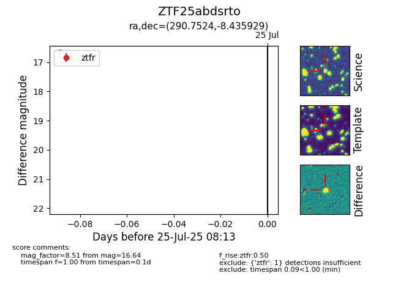

Target ZTF25abdsrto at 2025-07-25 08:13, see:
FINK: fink-portal.org/ZTF25abdsrto
Lasair: lasair-ztf.lsst.ac.uk/objects/ZTF25abdsrto
ALeRCE: alerce.online/object/ZTF25abdsrto
alt names
ZTF25abdsrto (ztf,fink)
coordinates:
equatorial (ra, dec) = (290.7524,-8.43593)
galactic (l, b) = (28.9255,-10.82364)
photometry
last ztfr=16.64
1 ztfr detections
